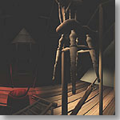

 Time-Critical Modeling and Rendering: Geometry-based and Image-based Approaches
,
PhD thesis, Department of Computer Science & Eng.,
The Chinese University of Hong Kong, 1998.Abstract
- In this thesis, we describe two approaches, geometry-based and image-based, to address the problem of time-critical modeling and rendering. Time-critical modeling and rendering aims to improve the rendering speed using both modeling and rendering techniques. Improving the rendering time enables interactive display of large scale complex scene. This is important in many applications such as virtual reality, medical visualization, flight simulation, etc.
- We first describe a new geometry-based simplification algorithm, adaptive skeleton climbing, which generates simplified mesh directly from volume data. By partitioning the volume into variable-sized rectangular boxes, the algorithm generates triangles to approximate the enclosed isosurface adaptively (larger triangles approximate smooth regions and vice-versa). Since we apply binary tree organization on each dimension of the rectangular boxes, it allows more flexibility in forming rectangular boxes which are not allowed in previous octree approaches. Therefore a coarser mesh can be generated using the proposed algorithm.
- Although generating simplified meshes can significantly reduce the rendering time, the rendering speed is still dependent on the complexity of the scene. Note that the scene can be arbitrarily complex. If the only goal of the graphics system is to provide the visual experience, we can model and render the desired image using previously recorded images (reference images). This leads to our development of image-based computer graphics. For pure image-based rendering, the rendering time will now only depend on the resolution of the images.
- Since the illumination of the scene is fixed during image capture, the illumination in the synthesized images is also fixed. We propose a novel concept of measuring apparent BRDFs of image plane pixels to overcome the unchangeable illumination problem in previous image-based approaches. By treating the image plane pixel as an ordinary surface element and measuring its apparent BRDF from the reference images, we can record the pixel BRDF. Using this apparent reflectance information, we are able to re-render the image-based scene/object under any desired illumination condition.
- The idea is verified by applying it to various image-based data structures, light field, Lumigraph and panorama. We also devise a practical compression scheme to handle the huge amount of data of pixel BRDFs.
Download Thesis
- Acrobat: phdthess.pdf (10.9Mb)